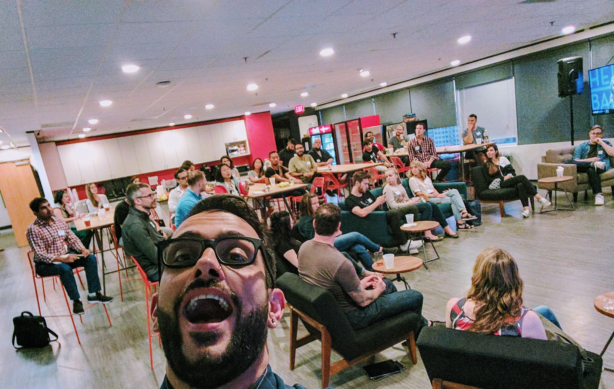
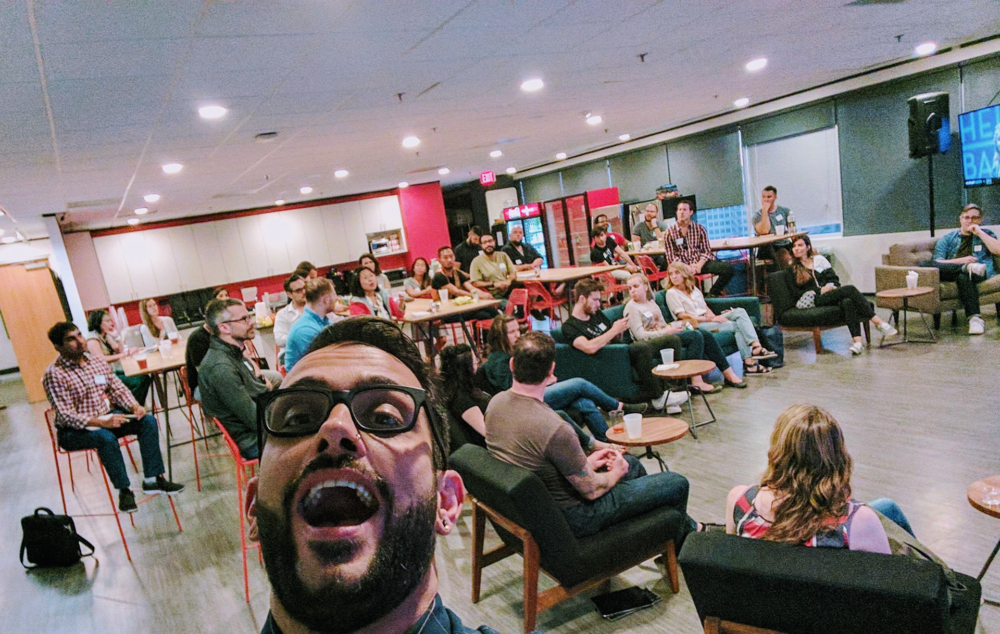
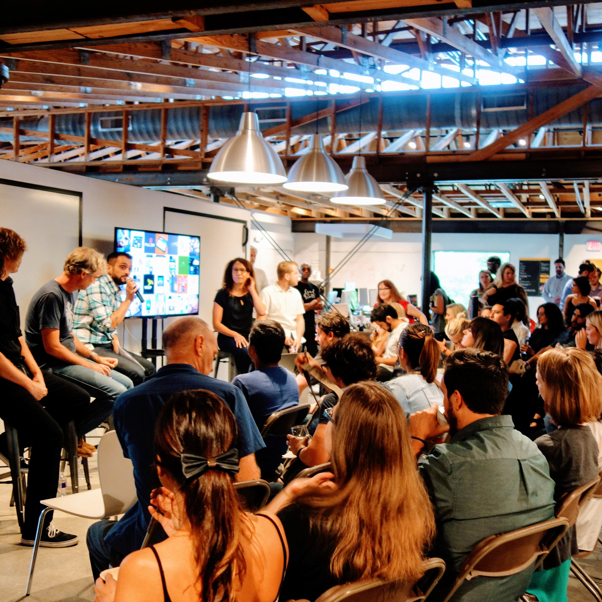
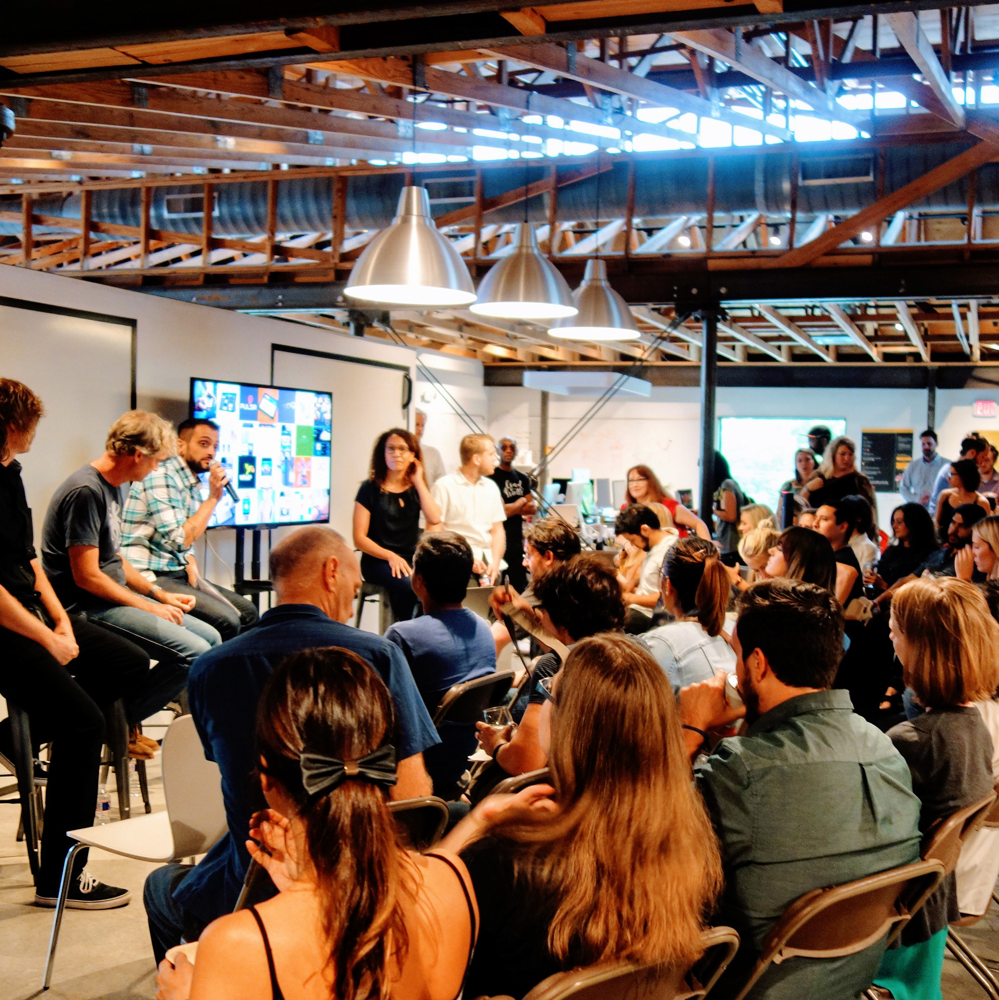

My design path began at an architecture firm in Buenos Aires while studying technical drawing and computer logic. When the internet boom hit, I jumped into webmastering at one of the first Software Training Centers to offer online education before moving to California 22 years ago. My passion for experience design led me to contract with innovative tech agencies like Mutual Mobile and Jackrabbit Mobile in Texas, which eventually opened doors to Electronic Arts.
EA brought me to San Francisco 8 years ago, followed by exciting roles at Lyft and now Instacart, where I've grown from product designer to systems designer over the last four years.
I'm a hybrid designer, strategist, and above all, a doer who thrives on crafting meaningful experiences. Beyond work, I'm currently tackling a 100-day React/JS challenge while exploring AI tools to rebuild my portfolio. I co-host a podcast about mental health and gay dating, and recently published my first fiction book, "Debugging the Bay."
My certifications in yoga instruction and personal training keep me grounded, while dance classes, knitting, and learning Arabic (my third language) fuel my creativity. I express myself through digital illustrations—currently recreating X-Men '97 characters—and nature photography walks. One of my favorite things is bringing friends together for monthly board game nights, creating connections that extend beyond screens.
Here I list my favorite collaborations fostering connection with fellow creatives or hosting community events.✨
In February 2021, I shared my experience working with the Claims Tech team and LGBTQ+ ERG at Lyft on the Cells and Pixels podcast. The show, hosted by Koji Pereira, features professionals discussing product design, UX research, and diversity in tech.
Listen to EpisodeAs Branding & Operations Director for fresh2design (2015-2019), I helped grow our Austin-based meetup to over 3,500 members. I led brand strategy, defined scaling processes, and hosted various events including software education panels and storytelling events.
As the AIGA Austin Chair for Small Talks, I elevated the program through industry partnerships and fresh content focusing on emerging design trends.
 

 

Led Workshops and Education Programs for Austin Design Week 2017, coordinating 30+ events and managing hosts to ensure successful experiences throughout the conference week.
"What an incredible week and it was all due to your efforts. What you all pulled off was an exceptional year!"
Drop me a line if you are working on something cool, or want to geek out about design systems or talk shop 👋